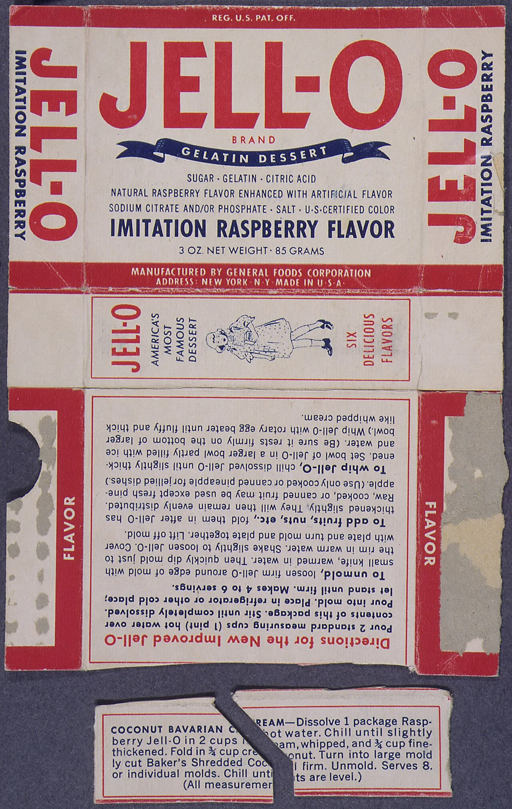
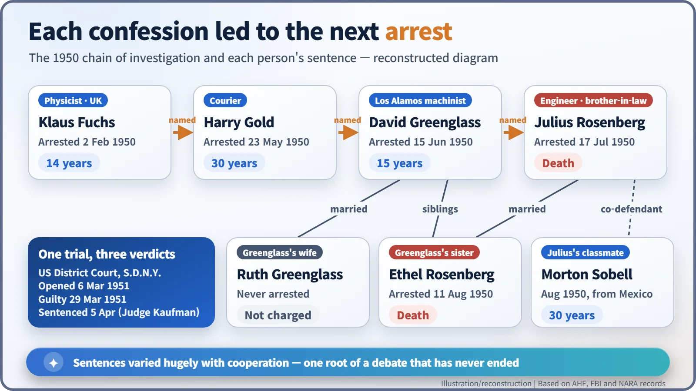
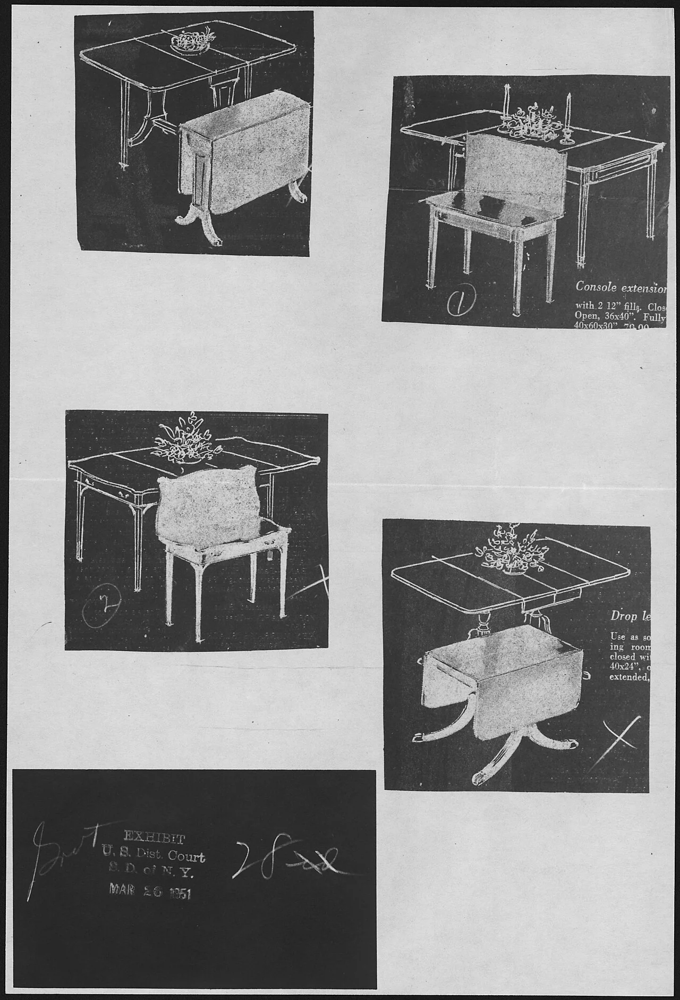
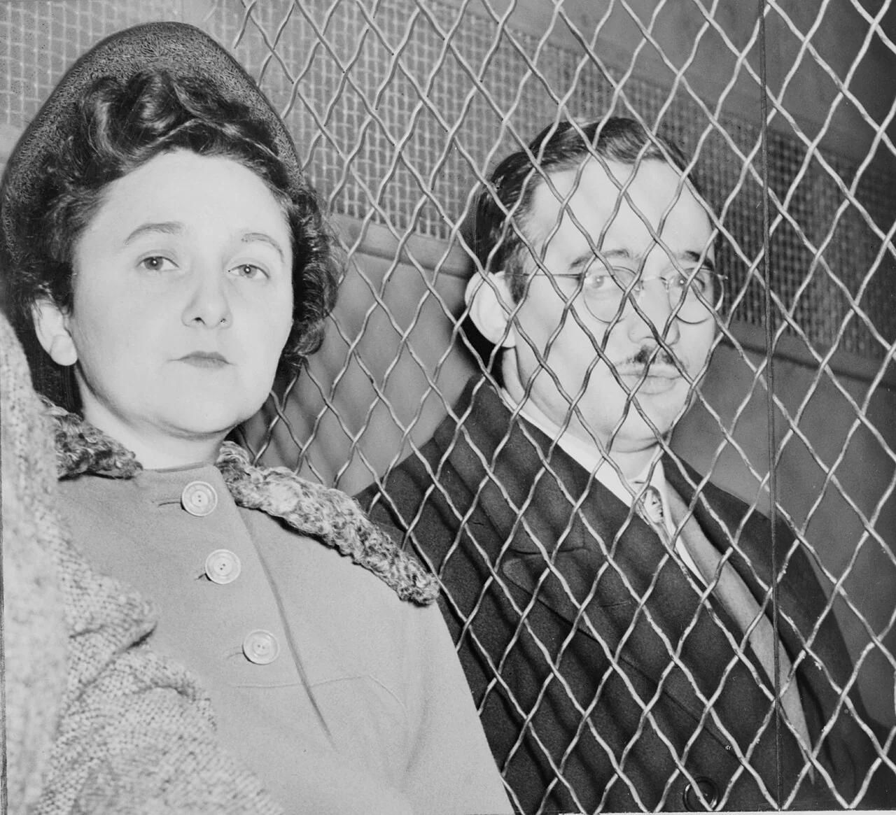
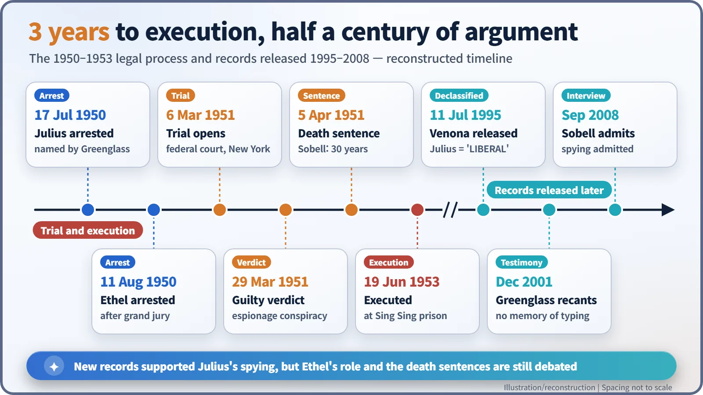

Nuclear History · 142
"What Flavour Was the Jell-O?" — The Rosenberg Case, the Cold War's Most Contested Trial (1950–1953)
A cut-up Jell-O box, a missing table and a changed testimony: the courtroom side of the atomic secret.
In 1950 a chain of confessions that began with Klaus Fuchs led the FBI to Julius and Ethel Rosenberg in New York. Convicted of conspiracy to commit espionage in March 1951, they were executed at Sing Sing prison on 19 June 1953. Records released decades later supported the case against Julius, but Ethel's role and the death sentences are still argued over.
"What flavour was the box?"
New York, March 1951. Defence lawyer Emanuel Bloch put this odd question to David Greenglass, the government's star witness. It was not as silly as it sounded. Greenglass had testified that in January 1945, after dinner at the Rosenbergs' flat, his brother-in-law Julius Rosenberg had cut the side panel of an empty Jell-O box into two irregular pieces. Whoever turned up in Albuquerque holding the matching half would be the Soviet courier. If Greenglass remembered the scene so vividly, surely he remembered the flavour? He did not. The raspberry box on display in court was a facsimile made by the prosecution, and the young prosecutor Roy Cohn is credited with choosing the flavour. [6]
The atomic bomb's secrets were fought over in laboratories, but this story plays out in a courtroom.

The dominoes start falling in Britain
The Soviet Union tested its first atomic bomb on 29 August 1949, and the news shocked Washington. In February 1950 the physicist Klaus Fuchs was arrested in Britain. His confession pointed to his courier, Harry Gold (arrested 23 May), and Gold's led to David Greenglass, an Army machinist who had worked at Los Alamos (arrested 15 June). Greenglass in turn named his sister Ethel's husband, the electrical engineer Julius Rosenberg. Julius was arrested on 17 July 1950; Ethel Rosenberg followed on 11 August, straight after giving evidence to a grand jury. [1]
The timing could hardly have been worse. Senator Joseph McCarthy's hunt for "Reds in government" had begun that February, and on 25 June the Korean War broke out.

A console table and a typewriter
The trial opened on 6 March 1951 in the federal court for the Southern District of New York. The charge was conspiracy to commit espionage, and the key witnesses were David and Ruth Greenglass. They said the Soviets had given the Rosenbergs a console table fitted out for microfilming documents. Julius replied that it was an ordinary table he had bought at Macy's for about $21. The table itself was never found, so a photostat of similar furniture went into evidence as Government Exhibit 28. [6]

The most damaging testimony against Ethel concerned a typewriter. In August 1950 Greenglass had told the grand jury: "I never spoke to my sister about this at all." Shortly before the trial, in February 1951, his story changed: Ethel, he now said, had typed up his notes. The change came as part of an arrangement under which his wife Ruth was never charged and could stay with their children. [1]
On 29 March the jury found the Rosenbergs and their co-defendant Morton Sobell guilty. On 5 April 1951 Judge Irving R. Kaufman sentenced Julius and Ethel to death. "I consider your crimes worse than murder," he told them. In his view, "putting into the hands of the Russians the A-bomb years before our best scientists predicted Russia would perfect the bomb has already caused, in my opinion, the Communist aggression in Korea, with the resultant casualties exceeding fifty thousand." Sobell received 30 years and Greenglass 15. [1]

Two years of appeals, and 19 June
The couple maintained their innocence to the end. Their lawyers appealed to the Supreme Court nine times, but the Court never reviewed the trial record. Albert Einstein and Pope Pius XII appealed for mercy, and Jean-Paul Sartre called the case "a legal lynching". Even FBI Director J. Edgar Hoover is reported to have opposed the death sentence for Ethel. Both President Truman and President Eisenhower refused clemency. [1]
On 17 June 1953 Justice William O. Douglas stayed the executions, but the full Court lifted the stay two days later. That evening, 19 June 1953, Julius and Ethel Rosenberg were executed in the electric chair at Sing Sing prison. They are often described as the only American civilians executed for espionage during the Cold War. Their sons, then aged ten and six, were later adopted by another family. [5]
Drawers opened half a century later
The story did not end there. On 11 July 1995 the U.S. government began releasing the Venona files, wartime Soviet cables that American and British codebreakers had decrypted. In them Julius appears under the cover name LIBERAL, running a spy network. Ethel had no cover name. [3] [4]
In 2001 Greenglass told a television interviewer: "I don't know who typed it, frankly, and to this day I can't remember that the typing took place." He added: "I would not sacrifice my wife and my children for my sister." In 2008 Morton Sobell admitted that he and Julius had passed military and industrial information to the Soviets, while saying Ethel's only guilt was being Julius's wife. [5] [1]

A verdict still divided
So the verdict of history remains divided. The historian Ronald Radosh holds that Julius was a spy but that the prosecution abused the system and Ethel's involvement was minimal. The lawyer Alan Dershowitz summed the couple up as "guilty and framed". Their sons have long argued that the government used Ethel as a lever to make her husband confess. Many historians also judge that the material Greenglass passed on was worth far less to the Soviet bomb than what Fuchs supplied. [1]
The atomic secret was never only a matter of equations. It was also a story of courts, public opinion and fear. The two halves of a cut-up Jell-O box are still kept at the National Archives, quietly asking how evidence, testimony and the mood of an era combine to produce a verdict.